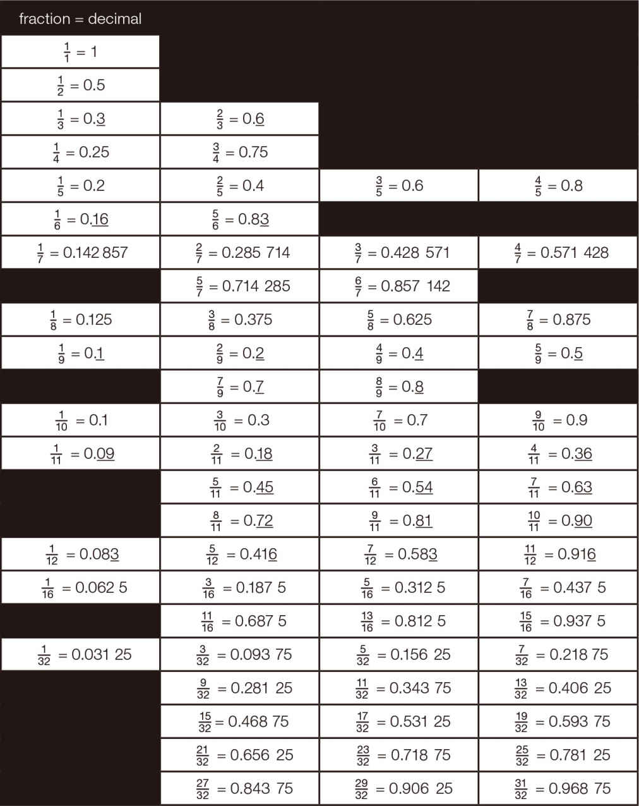
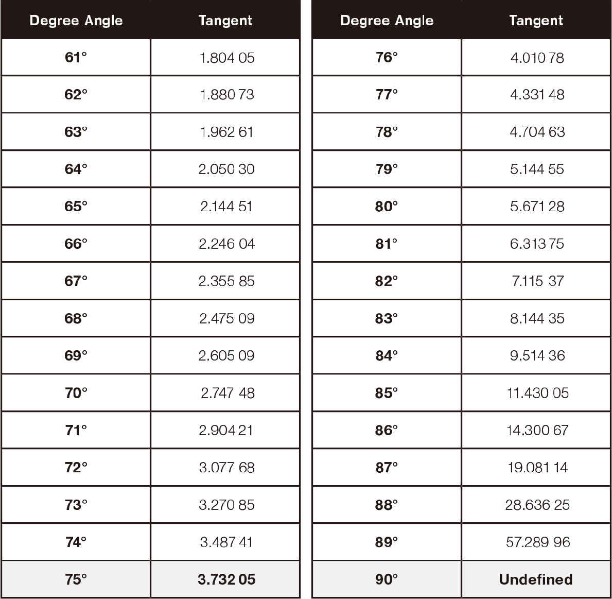

参考资料
现代数学名人
比尔·詹姆斯（Bill James）
通过对20世纪70年代和20世纪80年代《棒球文稿》的分析，比尔·詹姆斯改变了对美国棒球的成见。
自1977年以来，比尔·詹姆斯已经写了二十多本有关棒球历史和统计分析的书，这些书被称为“赛伯计量学”，已经被美国棒球协会广泛应用。他通过统计数据，科学地分析和研究棒球，预测球队为什么赢和输。
billjamesonline.com
萨尔曼·阿明·“萨尔”可汗（Salman Amin“Sal”Khan）
前对冲基金分析师萨尔曼·可汗是可汗学院的创始人，该学院是一个免费的在线教育平台和非营利性组织。可汗在自己家的一个小办公室里制作了4 000多个视频课程，教授众多学科，内容主要集中在数理方面。2012年，萨尔曼·可汗被《时代周刊》评为世界100大最具影响力的年度人物之一。
khanacademy.org
丹妮卡·麦凯勒（Danica McKellar）
丹妮卡·麦凯勒是一位美国女演员、电影导演、学者、作家和教育倡导者。她最出名的是她在电视节目《奇迹》中扮演了温妮·库珀的角色，并且她是四部非小说类畅销书的作者。
这四本书分别是：《数学不错哦》《我爱数学》《热门X：裸露的代数学》《女孩的曲线艺术：几何形态学》。麦凯勒在书中鼓励初中和高中女生要对学习数学有信心。
danicamckellar.com
绝密玫瑰：第二次世界大战中的女性电脑（Top Secret Rosies：The Female Computers of WWII）
1941年12月7日清晨，日本偷袭珍珠港，这一件事改变了许多美国年轻女性的生活。珍珠港事件突然把美国卷入第二次世界大战中，军方发起一场疯狂的全国性的找寻女性数学家的活动。
1942年，当计算机和女性都不被世人看好的时候，一群女数学家帮助国家赢得了战争，迎来了现代计算机时代。六十五年后，她们的故事终于被呈现在我们面前。
这些女数学家和科学家代号为“绝密玫瑰”，在第二次世界大战期间被秘密征募参与到弹道导弹研究实验和破译电台密码的工作（在“计算机”只意味着“计算”的时代，人们将她们称作“女性计算机”）。
topsecretrosies.com
格伦·惠特尼（Glen Whitney）
格伦·惠特尼，对冲基金经理，数学倡导者，在纽约开设了数学博物馆，这是唯一的一座数学科学类的博物馆。惠特尼不但是纽约长岛三村学区教育委员会的成员，而且是数学教育价值的有力倡导者。
momath.org
推荐网站
■www.khanacademy.org
■www.mathisfun.com
■www.coolmath.com
■www.easycalculation.com
■www.momath.org
（Museum of Mathematics）（数学博物馆）
■www.math.com
（for online scientific calculators）（在线科学计算器）
■www.docs.google.com
（for online spreadsheet）（用于联机试算表）
■spacemath.gsfc.nasa.gov
（math and calculus lessons and more）（数学和微积分，以及更多的课程）
■www.algebra.com
■www.piday.org
（Pi Day website）（圆周率日网站）
■www.nctm.org
（National Council of Teachers of Mathematics）（全国数学教师委员会）
■www.sneakyuses.com
■www.sneakymath.com
词汇表
| ≈ |
近似地，大约
约等于 |
| 度 |
（degree的名词复数）
温度量或弧度的指示。 |
|
Δ
|
德尔塔（Delta）
“Delta”意味着“变量” |
| e |
欧拉（Euler）（姓氏； Leonhard，1707—1783，瑞士数学家，物理学家）
小写字母e代表2.7118281828459045的欧拉数。它与利息支付计划和其他科学计算一起使用。 |
| n！ |
因子的，阶乘的
符号n！是一个节省空间的符号。
例如：4！＝4×3×2×1 |
|
f
（x
）＝ |
函数
函数是两个变量之间的关系。函数是使用f
（x
）符号的预定义公式。它的意思是“x
的函数”。 |
≠
≥
≤ |
不等于
大于或等于
小于或等于 |
| ∞ |
“无限”的意思是“永远持续”或走向无限。
例子：无限小。 |
|
∫
|
积分符号
积分符号用于集成或组合在一起的项。 |
| ∩ |
两个或多个数字集共享的公共数据或项。例如：（1,2,3,4）与（3,4）相交＝（3,4） |
lim
h
→0 |
极限
函数在给定x
处的值。 |
| （）X
|
乘法
2×3＝6 2×3＝6 2（3）＝6 |
| ％ |
百分比
分数是100的一个分数或比率。 |
| π |
圆的直径与圆周长的比值称为圆周率。π是一个永不结束或重复的数字，从3.141 592 653 589 793 2开始。 |

|
根号
根号用于平方根计算。
里面的项称为被开方数。 |
| ∶ |
范围/比例
表示两个词的比率。 |
| T：{（2,6）,（4,1）} |
特定输入数的有序对及其输出结果。 |
| ∑ |
求和
求和或sigma符号用于在一个范围内相加数字。上面和下面的总和符号指定多少次添加数字增量变量数。数字r第一次，数字1被添加到变量1中，然后往上累加。 |
|
θ
|
θ符号表示一个角度。 |
| ∪ |
两个或多个数字集共享的公共数据或项。（1,2,3,4,5）∪（3,4）＝（1,2,3,4,5） |
|
X
|
变化的，可变的
变量是一个你不知道的量的占位符。一个变量，如字母x
，可以代表时间，距离，金钱，或人，允许你用在方程式中来节省时间。 |
|
|
矢量
矢量表示方向和大小。 |
数学换算表
温度换算公式
分数，小数
度量衡换算表

注释下划线的数字表明这些数字是重复的。
幂表
正切函数表

（90度是未定义的，因为它是一条没有角度的垂直线）